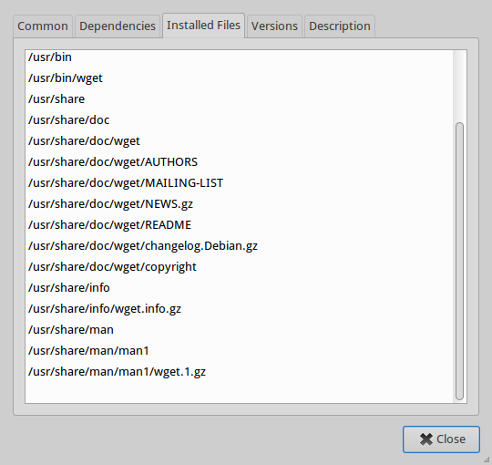
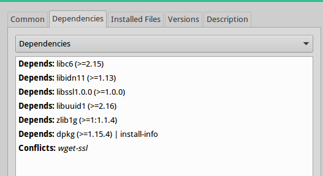
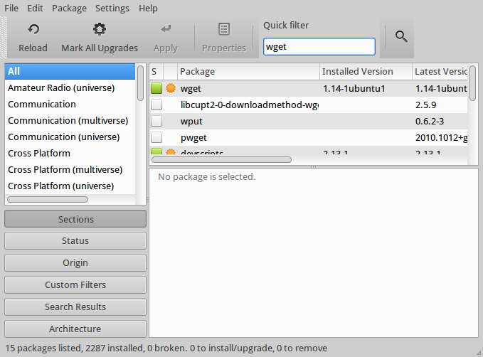

Installing programs in Ubuntu
This article will not only explain how to install stuff, but it will (hopefully) also give readers a better understanding about Linux’s structure for storing and executing programs, ultimately appreciate the usefulness of package managers in general.
Executables
Let’s start with something simple. Fire up your favorite text editor and create a file called
itc.sh with the following content:
#!/bin/bash
notify-send "Hello world!"
Let’s say I put it at the desktop. Now open up a terminal, go to the Desktop directory and make our itc file executable. In case you’re new, here are the commands:
cd /home/your_username/Desktop
chmod +x itc.sh
Protip: for the first command you can also type cd ~/Desktop, because ~ is the shorthand for
your home directory (/home/username)
With the chmod command, we made it possible to run our little script by typing its full path:
~/Desktop/itc.sh
Another shorthand to make your life easier: . stands for “current directory”, meaning if you are
currently in the ~/Desktop directory, you can run the script by simply typing:
./itc.sh
Either way, a notification saying “Hello world!” should pop up. This is a program in its
simplest form: an executable file. In this particular example it is a Bash script, but it’s not
limited to that. It can be a Python or Ruby script, or a compiled binary file. The file extension
isn’t even needed. You can rename it to simply itc and it should run just fine.
In order to run a file, you need to make it executable. This can be done with the
chmodcommand or via the GUI using Nautilus’s Properties dialog.
Path
So we’ve created a program that shows a useless message, good job! However, every time we call
it, we need to specify the whole address to the file: ~/Desktop/itc is probably not a very cool
looking command. In order to make it possible to simply run itc, you need to move it to the
/usr/bin/ directory. This requires root permission so we’ll need sudo too:
sudo mv ~/Desktop/itc /usr/bin/itc
We can now run our program by simply typing itc. You guessed it: every executable file put in
this directory will be available as a command. There are other directories like this too. You can
see a whole list of such directories by typing echo $PATH to your terminal.
To make an executable file available as a command, shove it into a directory that’s included in $PATH
Packages
Unfortunately, most programs have a lot of files instead of one, and they are scattered to many
different folders. Let’s have a look at the files of wget - the downloader that’s included in
every major Linux distribution:

It’s not that the developers chose to annoy us by scattering them all over the place. It’s simply
complying to Linux structure: executable files go to /usr/bin, man pages (user manuals that
show up when you type man wget) go to /usr/share/man, and so on. For more complex programs,
the number of files alone is terrifying, which makes installing and remove the program a nightmare.
On another note, almost every Linux program depends on one or many other programs. This is because of the UNIX philosophy that encourages writing each program to do one thing, and do it well. The goal is to make each program easier to implement and maintain as well as to avoid duplicate work. For example, program A may provide a functionality that both programs B and C need. Otherwise, B and C developers both have to write code for one same functionality. In this case, A is called a dependency of B and C. However, this introduces a bunch of problems:
- We need to install A before installing B
- We should know not to install A again when we install C
- We must be careful not to remove A if we are still using B or C
- What if B and C require different versions of A?
- I can go on…
This is where packages jump in. A package is basically the whole set of files of a program (or a
part of a program). It also stores necessary information such as which file goes to which
directory, what are the dependencies of this package, etc. A special program reads the
package, installs dependencies and puts files into their appropriate locations. This is called
a package manager. Of course besides installing, a package manager also manages updates
and removals of programs. Ubuntu is based on Debian, so it inherits Debian’s great package manager
called aptitude (or simply apt). Let’s take a look at wget’s dependencies:

The package manager maintains a list of available packages and their dependency/dependant relationships. For Ubuntu, the list is updated regularly on Canonical’s official servers. Everytime Ubuntu does the “Check for updates” thing, it is downloading the latest list of packages. And when Ubuntu updates, it is simply pulling newer versions of the installed packages from Canonical’s servers too. These servers are called repositories. All other major Linux distributions do the same thing: letting the package manager and the repositories work on their thing, saving users time to do more interesting stuff.
Here are some basic commands to get you started:
-
sudo apt-get install package-nameto install package -
sudo apt-get remove package-name- it’s obvious isn’t it? -
sudo apt-get update- update package list. Note that it only updates the list, not the packages -
sudo apt-get upgrade- upgrade packages to their latest versions
There will be programs that are not available on the official repositories, but are provided as
package files (Dropbox for example). Remember that the right package format for Ubuntu is .deb
files. Do not open .rpm files since they are for Fedora’s package manager called yum. When
you’ve obtained the file, simply open it with Ubuntu Software Center to start installing.
Synaptic, Ubuntu Software Center
Aptitude is only a command-line program, which is not very user-friendly. Synaptic is a GUI program
that provides a nice user interface that’s easy to use, while internally it uses apt to do all
the actual work.

Ubuntu Software Center is more than a GUI wrapper for apt. It is something similar to Apple’s
appstore with all those program ratings and promotions. It’s nice for beginners but the fact that
it hides the details like dependency list makes it undesirable for intermediate users. If you are
comfortable with Synaptic, I strongly recommend using it as your main way to install/uninstall
stuff. But ultimately, using the command-line apt always is the fastest way.